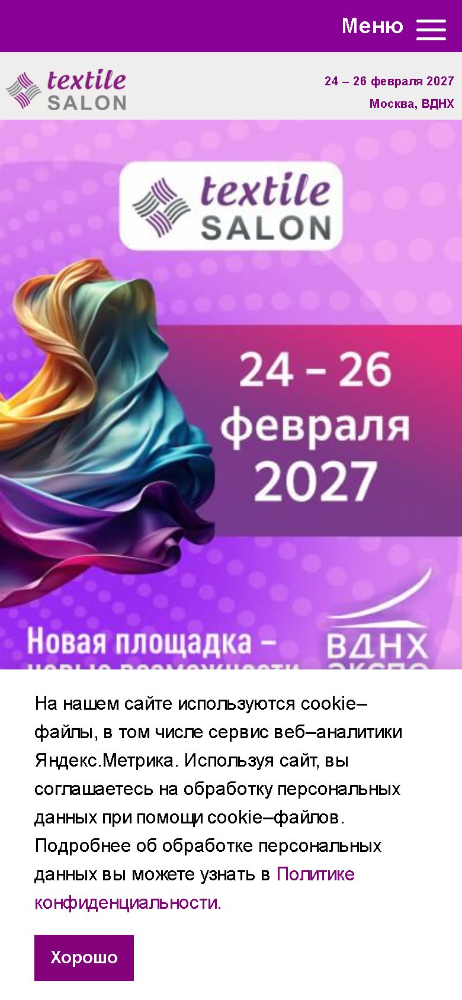
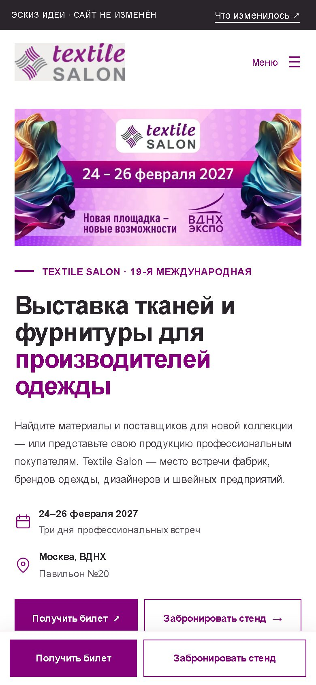
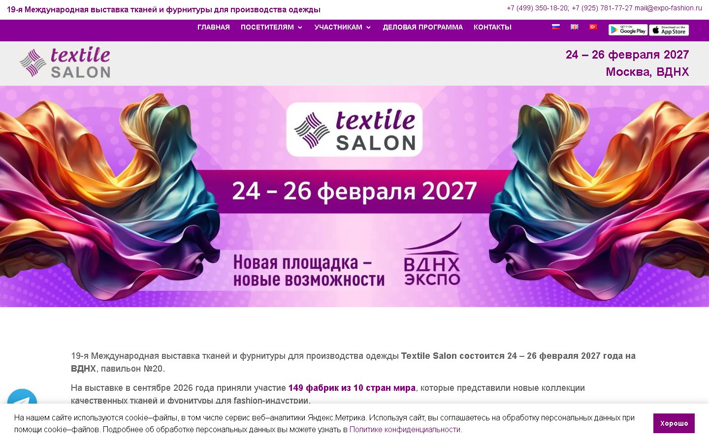
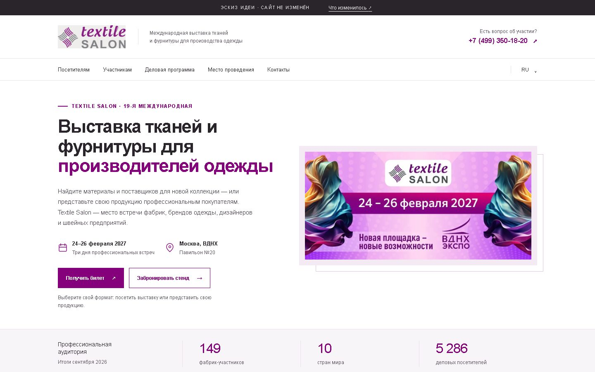

Пока работал над сайтом, посмотрел на главную глазами человека, который впервые слышит о Textile Salon. Здесь — что он видит сейчас, что можно показать понятнее, и эскиз, как это могло бы выглядеть. Это идея для обсуждения, а не готовый дизайн. На сайте ничего не менялось.
Открыть эскиз целиком →Новый человек решает за несколько секунд, остаться на сайте или закрыть его. За это время он должен понять четыре вещи. Сравнение — по первому экрану телефона.
| Что хочет понять человек | Сейчас | В эскизе |
|---|---|---|
| Что это? | Логотип и даты на баннере. Слова «выставка тканей и фурнитуры» — ниже, после прокрутки | Сразу в заголовке: «Выставка тканей и фурнитуры» |
| Для кого? | В тексте ниже баннера | «…для производителей одежды» и строка под заголовком |
| Когда и где? | На баннере — хорошо видно | На баннере и ещё раз рядом с кнопками |
| Что сделать? | Внизу кнопка «Получите билет»; бронь стенда — далеко ниже по странице | Две кнопки: «Получить билет» и «Забронировать стенд» — всегда под пальцем |


1234Плашка cookie в эскизе не показана — на сайте она, конечно, останется.


1234Ниже первого экрана — то, что помогает принять решение. Всё содержимое взято с вашего сайта, просто собрано в понятном порядке.
Три довода: одни сроки с CPM на ВДНХ, время, когда формируют заказы на сезон, больше всего фабрик из Турции и Европы.
Посетитель и участник сразу видят каждый своё: «найти поставщиков» или «представить коллекцию».
Рядом с кнопкой брони — 5 286 деловых посетителей, 89% из них принимают решения о контрактах.
Стена логотипов 149 фабрик и три отзыва участников — доверие без лишних слов.
Спокойнее: несколько фотографий и видео, которое загружается только по нажатию.
Адрес, часы работы и форма брони стенда рядом с контактами организатора.
Как изменятся заявки, честно покажет только статистика после запуска — заранее цифр не обещаю.
Задача эскиза — показать идею: что и в каком порядке человек должен увидеть на главной. Цвета, шрифты, фотографии и тексты можно менять. Кнопки и форма в эскизе демонстрационные — ничего не отправляют.
Без обязательств — это подарок. Может пригодиться при любом развитии сайта.
Обновляем только главную. Остальные страницы, языки и адреса не трогаем — быстро и без риска.
Отдельный проект: структура, дизайн всех страниц, перенос содержимого.
Если что-то из этого интересно — объём, сроки и стоимость обсудим отдельно.
Открыть эскиз целиком →